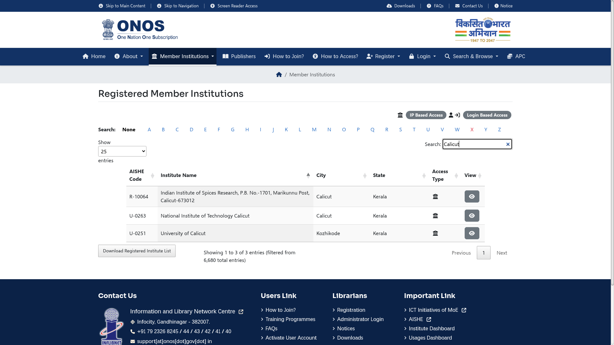

ONOS: check your institution before trying journal access
Studying, teaching or researching at a government institution? Before paying for an article or assuming you cannot get it, check whether your institution appears in the official One Nation One Subscription (ONOS) member directory. Then ask your library how access is provided.
ONOS is not a promise of free journal access for every individual. Its official scope covers students, faculty and researchers of central- and state-government-managed higher education institutions and central-government R&D institutions. A directory match does not by itself prove your individual entitlement or that a particular article will open.
What we checked
We opened the public Registered Member Institutions directory and typed Calicut into the table's Search box. It showed three entries from 6,680 total: Indian Institute of Spices Research, National Institute of Technology Calicut, and University of Calicut. This was a public directory search without signing in, not a check of a student's account or journal full text.

How to check your institution
- Open onos.gov.in/instituteList. Wait for the searchable table to load.
- Use the table's Search box. Try your institution's name; if needed, try a distinctive word or city spelling.
- Match the institution name, city and state carefully. A similarly named institution is not a match.
- Ask your institution's librarian or nodal person how your own access works. Do not use another person's credentials.
We tested the Calicut keyword only. If you cannot find your institution, recheck the spelling and ask your library. A missing result is not proof that you are ineligible or that the institution cannot join.
Campus and off-campus access are different
The official How to Access guide says institutions with static IP addresses can provide access through the campus network, without separate individual registration for that route. It describes off-campus access through an institutional identity provider and INFED. For colleges without static IP addresses, it describes a central identity provider with users managed by the institution's librarian or nodal person; authorised users obtain credentials from their college.
These are the provider's instructions. We did not authenticate through any institution, verify a personal account, search for a particular paper or test a publisher download. We did not register anyone or pay for access. We have not checked whether a particular journal, year, article or publishing charge is covered.
Use access within the licence
The official License & Fair Use page allows specified scholarly uses for authorised users and restricts commercial resale, public-network redistribution and giving access to unauthorised users. Do not treat subscription access as permission to upload papers publicly or share logins. This guide does not assess article-processing-charge support.
Why use the official directory?
It provides the portal's own institution listing, rather than a guessed answer about whether your college participates. The next useful step is a library check, not buying a subscription or creating an unofficial account.